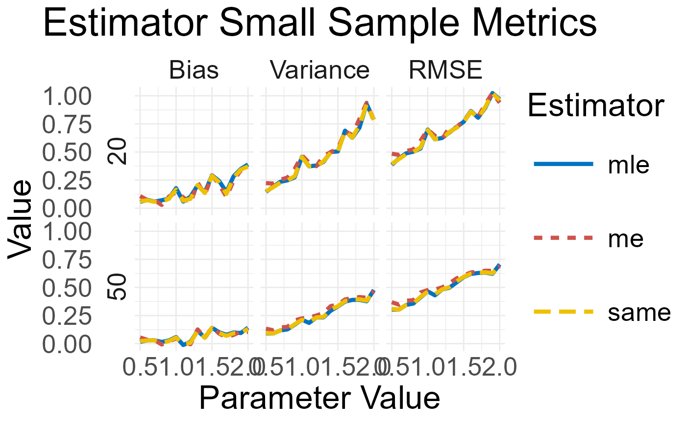
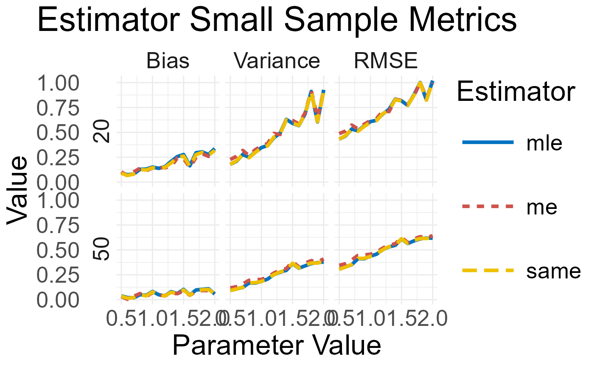

This function provides an easy way to illustrate objects of class
SmallMetrics and LargeMetrics, using the ggplot2 package. See details.
Usage
plot(x, y, ...)
# S4 method for class 'SmallMetrics,missing'
plot(
x,
y = NULL,
colors = NULL,
title = NULL,
save = FALSE,
path = NULL,
name = "myplot.pdf",
width = 15,
height = 8
)
# S4 method for class 'LargeMetrics,missing'
plot(
x,
y = NULL,
colors = NULL,
title = NULL,
save = FALSE,
path = NULL,
name = "myplot.pdf",
width = 15,
height = 8
)Arguments
- x
An object of class
SmallMetricsorLargeMetrics.- y
NULL.
- ...
extra arguments.
- colors
character. The colors to be used in the plot.
- title
character. The plot title.
- save
logical. Should the plot be saved?
- path
A path to the directory in which the plot will be saved.
- name
character. The name of the output pdf file.
- width
numeric. The plot width in inches.
- height
numeric. The plot height in inches.
Details
Objects of class SmallMetrics and LargeMetrics are returned by the
small_metrics() and large_metrics() functions, respectively.
For the SmallMetrics, a grid of line charts is created for each metric and
sample size. For the LargeMetrics, a grid of line charts is created for
each element of the asymptotic variance - covariance matrix.
Each estimator is plotted with a different color and line type. The plot can be saved in pdf format.
Examples
# \donttest{
# -----------------------------------------------------
# Beta Distribution Example
# -----------------------------------------------------
D <- Beta(shape1 = 1, shape2 = 2)
prm <- list(name = "shape1",
val = seq(0.5, 2, by = 0.1))
x <- small_metrics(D, prm,
est = c("mle", "me", "same"),
obs = c(20, 50),
sam = 1e2,
seed = 1)
plot(x)

# -----------------------------------------------------
# Dirichlet Distribution Example
# -----------------------------------------------------
D <- Dir(alpha = 1:2)
prm <- list(name = "alpha",
pos = 1,
val = seq(0.5, 2, by = 0.1))
x <- small_metrics(D, prm,
est = c("mle", "me", "same"),
obs = c(20, 50),
sam = 1e2,
seed = 1)
plot(x)

# }